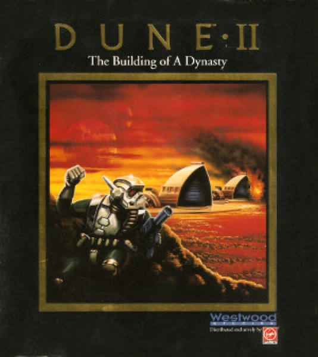

Strategy · 1992
Dune II
Harvest, build, rush: the command-and-control loop everything else copied.

Cover: Wikipedia: Dune II
Facts
- Released
- 1992-01-01
- Genre
- RTS
- Category
- Strategy
- Platforms
- Nintendo, PC, Retro home computer
- Developers
- Westwood Studios
- Publishers
- Virgin Interactive